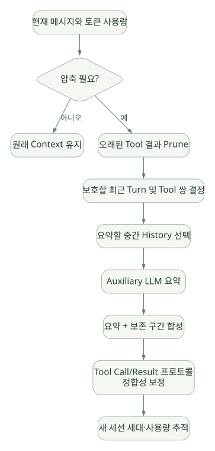

SECOND STUDY / 모델 입력·캐시·압축
모델 입력·캐시·압축
이번 단원의 읽는 관점
시스템 스냅샷과 대화·도구 스키마가 요청으로 조립되는 과정을 읽습니다. Prefix 계산 재사용과 메시지 압축은 서로 다른 문제를 풉니다.
살펴볼 경계캐시가 유지되는 구간, 압축 후 잃는 정보와 Tool Call/Result 짝을 확인하세요.
이 페이지의 세부 목차
7. Context Compression: 무엇을 버리고 무엇을 보존하는가?#
7.1 캐싱과 Compaction은 반대 문제가 아니다#
- Caching: 같은 Prefix를 다시 볼 때 계산을 아끼는 것.
- Compression: Context Window가 부족할 때 LLM에 실어 보내는 정보량을 줄이는 것.
- Pruning: 주로 오래된 Tool 결과 등 저가치 원본을 삭제·대체하는 것.
- Summarization: 원문 여러 개를 짧은 요약으로 바꾸는 손실 변환.
- RAG/Search: 필요할 때 별도의 저장소에서 지식을 되찾는 것.
7.2 Hermes의 압축 계층#
[DOC] Hermes는 ContextEngine 추상화가 있고 기본 구현은 ContextCompressor다. 문서상 기본 압축 기준은 모델 Context Window의 50% 수준에서 선제 동작할 수 있고, Gateway Hygiene는 85%에서 추가 방어로 작동한다. 설정·모델 Context·출력 여유에 따라 실제 판정은 달라질 수 있으므로 매 요청에서 정확히 50%로 고정된다고 단정하면 안 된다.
[SRC] ContextCompressor.compress()는 여러 믹스인과 보조 함수를 통해 Tool 결과 사전 Prune → 보호할 앞/뒤 메시지 구간 결정 → 보조 LLM Summary 생성 → Tool Call/Result 짝 정리 등의 절차를 오케스트레이션한다. 압축기는 context_compressor.py 외에도 context_compressor_prune.py, context_compressor_summary.py, context_compressor_tail.py 등으로 모듈이 분리되어 있다.
코드: https://github.com/NousResearch/hermes-agent/blob/v0.22.5/agent/context_compressor.py#L5029
문서: https://hermes-agent.nousresearch.com/docs/developer-guide/context-compression-and-caching
7.3 단계별 압축 절차#
가로로 이동해서 읽을 수 있습니다. 도식 크게 보기 ↗

원문의 학습용 도식입니다. 연결 방향·분기 조건·점선·쌍방향 연결을 보존해 세로로 배치했습니다. 실제 구현·의사코드·해석의 구분은 본문을 함께 읽으세요.
도식 원문 보기 (Mermaid)
flowchart TD
A[현재 메시지와 토큰 사용량] --> B{압축 필요?}
B -->|아니오| Z[원래 Context 유지]
B -->|예| C[오래된 Tool 결과 Prune]
C --> D[보호할 최근 Turn 및 Tool 쌍 결정]
D --> E[요약할 중간 History 선택]
E --> F[Auxiliary LLM 요약]
F --> G[요약 + 보존 구간 합성]
G --> H[Tool Call/Result 프로토콜 정합성 보정]
H --> I[새 세션 세대·사용량 추적]공식 문서에 있는 중요한 세부 조건:
- 오래된 Tool 결과가 충분히 길면 보호되지 않는 구간의 본문을 먼저 대체할 수 있다.
- 모델이 방금 호출한 Tool 결과처럼 아직 판단에 사용되지 않은 결과는 보호해야 한다.
skill_view의 내용이 압축 과정에서 사라지면 Skill 재로딩이 필요하다는 마커를 남긴다.- 최근 메시지와 Tool 호출/응답 쌍을 보존하려는 규칙이 있다.
- 세션 압축과 저장 계보(parent/child lineage)가 연동될 수 있다.
7.4 왜 Tool 결과를 먼저 줄일까?#
Tool 결과에는 파일 전체, 긴 셸 로그, 웹 페이지 전문처럼 비용이 큰데 현재 필요성이 낮은 데이터가 많이 포함된다. 과거 Tool 원문이 필요하면 재검색/재실행할 수 있지만, 사용자의 요구사항이나 최종 결론을 잘못 요약하면 회복하기 어렵다. 따라서 고비용 Tool Body를 먼저 Prune하는 전략이 합리적이다. [INF]
그러나 파일 검색 결과가 다시 검색 불가능한 외부 데이터였거나, 과거 측정값이 Summary에서 사라지면 문제가 된다. 자체 설계 시에는 Summary에 source_id, artifact_uri, query, timestamp, version, checksum을 남기는 대안이 있다.
7.5 압축 실패와 무한 재압축 방지#
[SRC] conversation_loop.py에는 압축 Timeout 뒤 원본을 손실 없이 유지하고 세션 전환/재시도를 권하는 종료 메시지 경로가 있으며, 이미 완료한 압축이 실제로 토큰을 줄였는지 확인해 재압축 예산을 재가동하는 검사도 있다. context_compressor.py는 보조 LLM 실패·지연이 다른 실행에 영향을 주지 않도록 ContextVar로 일시적인 Fallback Route를 고정하는 로직을 포함한다.
핵심 교훈: Compaction도 실패 가능한 외부 API 작업이므로 Timeout, Fallback, Partial Failure, Summary 품질과 세션 무결성까지 다뤄야 한다.
7.6 Cache와 Compaction의 Trade-off#
| 전략 | 장점 | 위험 |
|---|---|---|
| History를 오래 유지 | 세부 근거 보존, 캐시 재사용 가능 | Context Window 포화 |
| 자주 압축 | 비용·용량 절약 | 정보 손실, 캐시 Prefix 변화 |
| Tool 결과를 외부 파일로 저장하고 Stub만 노출 | 큰 출력의 재사용 가능 | 파일 관리 및 접근 통제 필요 |
| Summary 뒤 근거 식별자를 유지 | 추적성 강화 | 모델이 다시 조회하도록 설계 필요 |
| 중요한 상태는 별도 State DB에 구조화 | 장기 작업 복구 용이 | 스키마·버전·동기화 관리 증가 |